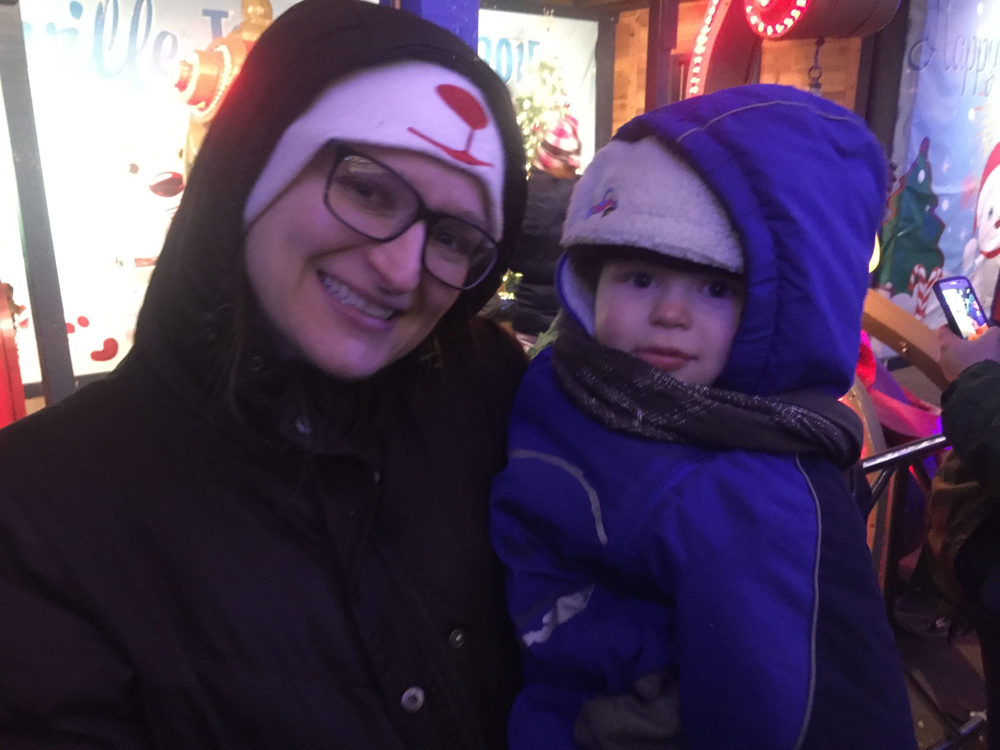
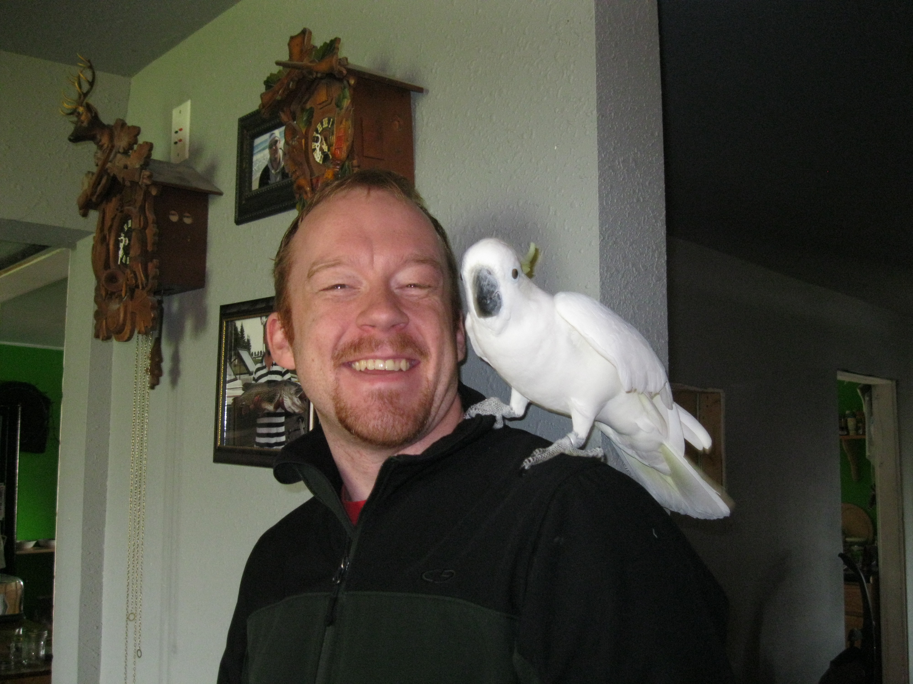

Who Am I, You Ask?
Having grown up in middle Wisconsin in the quante litte town of Mauston, WI, I got a taste of small-town life and bigger city when traveling to nearby Madison and the WI Dells ("the Water Park Capitol of the World"). I went to college at the University of Wisconsin-Madison and was active in many activities from the student council, to the wildlife society, to the Big Brother Big Sisters organization.
I've had a round-about career starting in wildlife ecology, where I studied cranes and bats in southern Wisconsin. Then I found my way into mapping crane habitats with GIS (geographic information systems). I did a degree in that, and for the most part, loved working with the technology, mapping, digitizing, teaching on databases, and making awesome digital and paper maps...but alas, I've become bored with the desktop applications and want to jump into the world of webmapping (basically websites driven with GIS like google maps).
GIS Development
I've brought GIS technologies to diverse fields including natural resources, utilities, land and parcel management, hydrology, and health sciences. For each project and position I develop custom applications (using python, ArcGIS online, and simple JavaScript Google and Esri API apps) for land management, locational maps, and secured website data-entry applications.
Diverse Background
While completing a BS in wildlife ecology in 2006 from UW-Madison, I aspired to become a veterinarian; however, my career path took a winding path. I initially studied genetics and biology, and eventually landed on the wildlife ecology-research tract where I researched deer, bats, insects, reptiles, aong others. After graduating, I interned with the International Crane Foundation (ICF) in Baraboo, WI following sandhill cranes and whooping cranes in southern Wisconsin. Our research focused on understanding the spatial distribution of crane territories and how those influences each crane's genetics. My career took focus when I started mapping crane habitats and coordinated independent research looking at the collisions risk that cranes experienced when flying low among low-power distribution lines.
My Family
Here's my little guy, Fynn, on our way to see Santa at Bentleyville.
My husband and I have a full house with 2 cats: the quite and friendly Trinity, and little miss prissy pants, Mitsy, who often beats up Trinity; a sulfar-crested cockatoo, who is only 24 years and is expected to live another 40-60 years; and finally my 2 1/2 years old Fynn, and 7-month old Lily.
My Interests
I've enjoyed all 4 seasons and the activities that go with them: Summer & Spring - canoeing, swimming, running, hiking & geocaching, water-skiing. Fall & Winter - downhill & cross-country skiing, snow-shoeing, and occasionally snow-mobiling.
I'm an avid pianist, playing anything from classical Bach to the Superior Mario Brother's theme song. Thanks to my grandmother, I'm ever grateful for my her gifting me her century-old, ivory-keyed piano, despite it being a beast to move! I especially enjoy the time I play duets with my toddler.

{kind=link}
{kind=link}